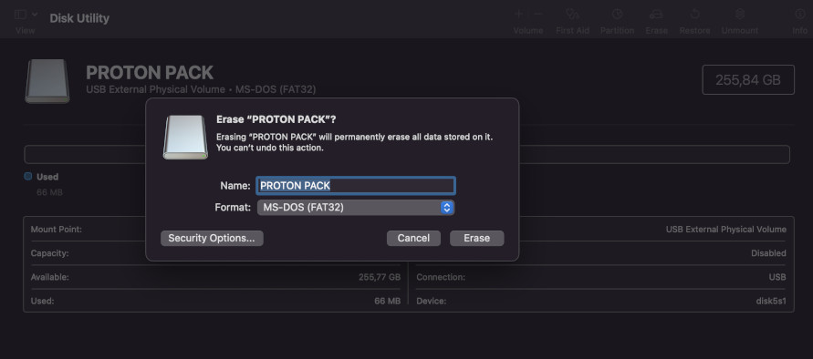
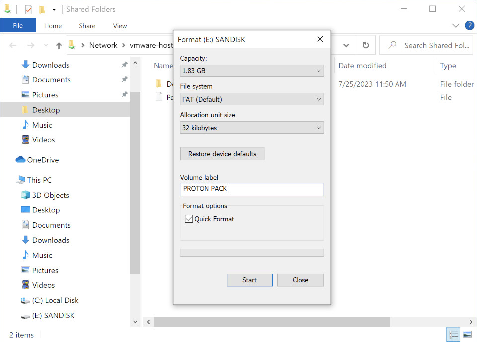
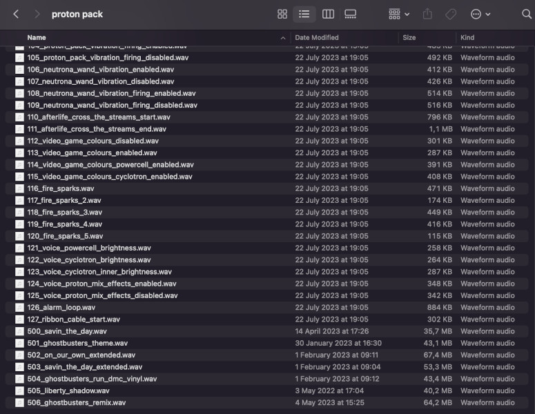

AUDIO
Loading Audio Files (Effects + Music)
This repository (for somewhat obvious reasons) does not provide music tracks for your project other than a single track which was graciously approved by the independent artist for inclusion. You will need to prepare any music tracks for use by exporting MP3 or AAC audio files as uncompressed stereo 44.1kHz 16-bit WAV files. This can be done easily using a program such as Audacity to open the music file and export to WAV format. See the instructions below for how to name your files for loading onto the SD cards.
Format your SD Card to FAT32
Please consider high-quality, name-brand SD Cards. We recommend Sandisk Extreme A1/A2 U3 V30 32GB Micro SD Cards.
Your SD cards MUST be formatted as FAT32 using 32KB block size. Use a full formatting option for the SD cards not a quick formatting for best results.
SD Cards with capacities larger than 32GB in FAT32.
MAC and Linux
Mac and Linux users can format SD Cards larger than 32GB as FAT32 normally with their standard disk utility software. 
WINDOWS
SD Cards with capacities of 32GB OR LESS can be formatted normally in the Windows Explorer. 
SD Cards with capacities larger than 32GB for Windows users will need to be formatted a different way. We recommend the free tool Fat32Format by Tom Thornhill. It can be found in the extras folder of this repository or in the direct download link below
(Web Site) Fat 32 Format GUI version
(Direct Download link) guiformat.exe

Thank you to Tom Thornhill for allowing us to distribute his FAT32 formatter for Windows users. If you find his software useful, you can donate directly to him by clicking on the button below

Loading Files to the SD Cards
Sound Effects
Load all sound files from the "sounds" folder onto both SD cards. The file names must be identical and match between the SD cards so that all effects are synchronized and played by both Proton Pack and Neutrona Wand at the same time. Most effects are played on both the pack and wand while firing, with some minor adjustments to volume or fading to provide the most effective impact.
Sound effects are prefixed with numbers 001-499 while music files will be prefixed as 500 and above. DO NOT LEAVE GAPS IN PREFIXES WHEN NUMBERING FILES! The only exception is between the last sound effect and first music track.
Music Tracks
As of release v5.3 and later it is normal to NOT hear music playback from the Neutrona Wand when connected to a Proton Pack. This change forces music to only be played back through the Proton Pack, meaning it is only necessary to load music onto the SD card for the pack. It is only when using the Neutrona Wand in "benchtest" (aka. standalone) mode that music files are expected to be loaded onto the SD card for the wand.
To add more music, copy stereo WAV tracks (uncompressed 16-bit 44.1kHz stereo WAV files) onto an SD card. File naming of the music tracks start at 500. So for example, 500_somesong.wav, 501_somesong.wav, 502_somesong.wav, etc. Do not leave any gaps in the number sequencing! (For example of what NOT to do, 500_somesong.wav followed by 502_somesong.wav leaving off 501_somesong.wav on the SD card.) The most and only important part in the naming is the XXX_ prefix for all tracks.
📝 You MUST remove any metadata that may be present in the music WAV files that you add. This can cause problems with loading and playing back your music tracks
The below photo is an (outdated) example of the prefixing and music sequencing
